Modul 12 — Cyber Security. Školení s živými ukázkami a odkazy na reálné nástroje.
Autor: Karel Rejthar, SmartEdu s.r.o.
Metodik digitálního vzdělávání Plzeňského kraje
↔ šipky nebo mezerník · O osnova · dema se otevírají v novém panelu
15 minut vysvětlení → 10 minut ukázky → 15 minut cvičení → 5 minut vyhodnocení.
Přestávky jsou mimo uvedených 225 minut. Zajímavosti označené „Volitelné“ využijeme jen při časové rezervě.
Počítač s prohlížečem; pro některé úkoly desktopový Word nebo archivátor. Telefon je volitelný.
Pracujeme s fiktivními údaji. Bez potřebného programu řešte úkol ve dvojici nebo sledujte lektora. Názvy nastavení se liší podle verze a správy organizace.
Klávesa O otevře osnovu a slovníček. Obnovit stránku znamená začít znovu.
Otevřete Arénu a vyzkoušejte si své znalosti kyberbezpečnosti.
Poznamenejte si otázky, u kterých jste váhali. Během školení se k nim můžeme vrátit.
Proč na bezpečnosti záleží, co znamená důvěrnost, integrita a dostupnost, role podle GDPR a jak funguje manipulace člověkem.
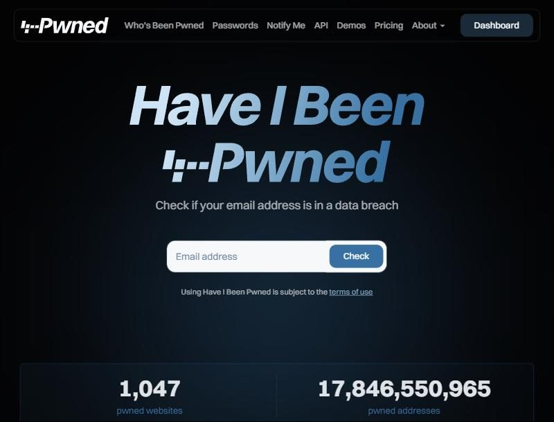
Počítačová kriminalita: trestná činnost využívající IT. Hacking: zkoumání či překonávání systému; rozhoduje mimo jiné oprávnění a účel.
Útočník ukradne seznam klientů. Zaměstnanec ho omylem pošle jinam. Požár zničí jediný disk. Výpadek poskytovatele znemožní přístup do cloudu.
Bezpečnostní politika: pravidla organizace pro účty, zařízení, data a hlášení problémů.
Nejmenší oprávnění: každý vidí pouze to, co potřebuje. Data třídíme, určíme vlastníka i dobu uchování.
Cloud znamená také závislost na provozovateli, dostupnosti a nastavení sdílení. Veřejný odkaz může zpřístupnit soubor komukoli.
Ke každé situaci určete: co je ohroženo, koho se problém týká a jak mu předejít.
1. Integrita: kontrola změn a ověření účtu jiným kanálem. 2. Důvěrnost: omezení sdílení a přístupů. 3. Dostupnost i důvěrnost: zálohy, šifrování, zámek a fyzická ochrana. Jedna událost může ohrozit více pilířů.
Ve dvojici nacvičte odmítnutí a ověření identity. Pojmenujte použitou manipulační techniku.
Pretexting a vishing: záminka, autorita a časový tlak. Kód nesdělujte, hovor ukončete a kontaktujte IT známým firemním kanálem.
Makra a šifrování, přehled druhů malwaru, jak pracuje antivir a co dělat s nakaženým souborem.
Trojan — trojský kůňWorm — červ (šíří se sám)Win32 / BAT / PowerShell — platforma, na které běžíOLE2 · Exploit.MSOffice — útok přes Office dokument a makraHosts2 — mění soubor hosts → pharmingMiner — skrytě těží kryptoměny.gen · Generic · ML — detekce podle vzoru / strojového učeníČísla ukazují, co antivirus zablokoval — slouží jako trend, ne přesná statistika celé ČR.
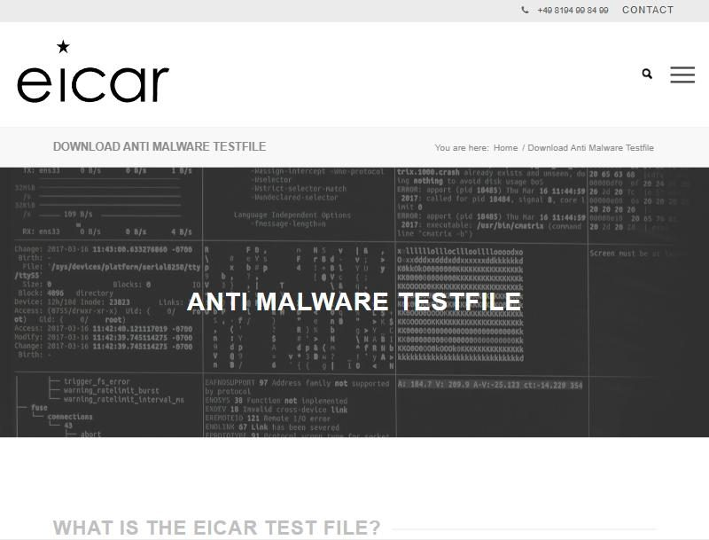
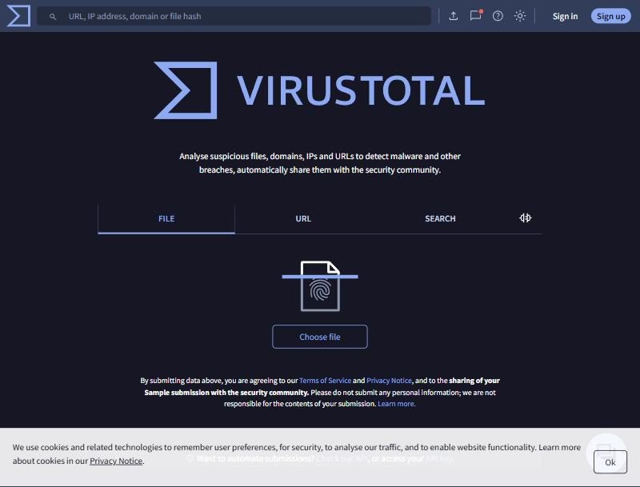
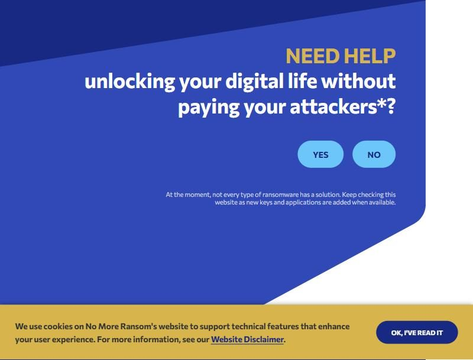
Malware je škodlivý software. Trojský kůň předstírá užitečný program. Virus se váže na hostitelský soubor, červ se může šířit samostatně.
Makro automatizuje práci v dokumentu, ale může také provádět škodlivé kroky. Kvůli cizí příloze nevypínejte ochranu maker.
Spyware sbírá údaje, keylogger zaznamenává klávesy, adware vnucuje reklamu. Rootkit maskuje přítomnost, backdoor nabízí skrytý přístup.
Botnet propojí ovládnutá zařízení. Ransomware vydírá šifrováním či hrozbou zveřejnění. Jeden program může kombinovat více funkcí.
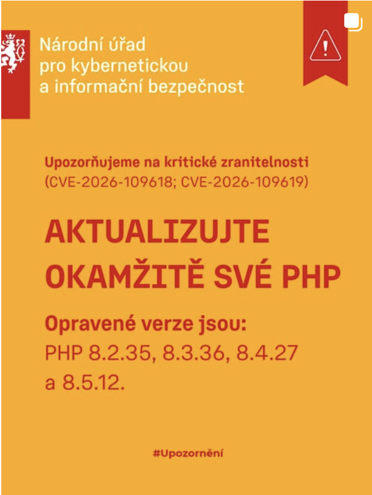
PHP je jazyk a běhové prostředí používané na webových serverech. Zranitelnost je bezpečnostní slabina; CVE je identifikátor konkrétní známé zranitelnosti.
Upozornění uvádí CVE-2026-109618 a CVE-2026-109619. Opravy byly vydány ve verzích 8.2.35, 8.3.36, 8.4.27 a 8.5.12. Jde o stav k uvedenému datu, nikoli trvalý seznam nejnovějších verzí.
Praktická reakce: správce webu nebo hosting ověří používanou verzi a dostupnou opravu, zajistí zálohu, aktualizaci a kontrolu funkčnosti. Běžný uživatel předá upozornění odpovědnému IT.
Ne. Toto upozornění se týká PHP na serveru. Je nutné aktualizovat dotčenou komponentu; aktualizace prohlížeče serverovou chybu neopraví. Naše statická prezentace PHP nepoužívá.
Ověření a aktuální pokyny: NÚKIB – upozornění na kritické zranitelnosti v PHP · PHP – oficiální oznámení a verze
2 minuty v rámci výkladu a ukázky aktualizací v hodině 2
Signatura: známý vzor škodlivého kódu. Heuristika: vyhodnocení podezřelých vlastností. Detekce chování: sledování činnosti programu.
Zero-day: nově zneužívaná zranitelnost bez dostupné nápravy v daném okamžiku. Antivir není náhradou aktualizací.
Plán kontroly ukažte v nástroji používaném organizací; u Defenderu může být spravován systémem či IT. Na mobilu respektujte možnosti konkrétního systému.
Postup: Microsoft – kontrola souboru. EICAR je volitelná ukázka lektora ve vyhrazeném prostředí; účastníci jej stahovat nemusí.
Výsledek: obsah se bez správného hesla neotevře. Pouhé omezení úprav tuto ochranu nenahrazuje.
Archiv: v dostupném archivátoru vyberte cvičnou složku, vytvořte šifrovaný archiv s heslem a ověřte rozbalení. Pokud je k dispozici, zapněte i šifrování názvů souborů.
Disk: lektor ukáže šifrování zařízení a umístění obnovovacího klíče. Aktivaci na pracovním zařízení řeší IT.
Šifrovací klíč umožňuje dešifrování; jeho ztráta může znamenat ztrátu dat. Heslo předejte jiným kanálem než soubor. Webový Word tuto funkci nemá.
Typy sítí, Wi-Fi a firewall, přihlašování, biometrie, vícefaktorové ověření a silná hesla.
port:3389 country:CZvzdálené plochy (RDP)port:5900 country:CZVNC; výpis sám neprokazuje slabé heslocountry:CZ product:"Hikvision"kameryport:23 country:CZTelnet — zastaralý, nešifrovanýZáleží na náhodnosti hesla, způsobu uložení, výkonu útočníka i omezení pokusů.
Dlouhé, ale známé přísloví může být předvídatelné. Používejte jedinečná náhodně generovaná hesla nebo náhodně sestavené fráze.
LAN: místní síť, například kancelář. WLAN: místní bezdrátová síť. WAN: síť propojující vzdálená místa.
SSID: název Wi-Fi sítě. MAC adresa: identifikátor síťového rozhraní; lze jej napodobit a zařízení jej mohou měnit.
WPA/WPA2/WPA3: generace zabezpečení Wi-Fi; původní WPA je zastaralé. Skrytí SSID ani filtr MAC nenahradí šifrování.
Firewall: pravidla povolené komunikace. VPN: chráněný tunel k poskytovateli či organizaci; neověří poctivost webu.
HTTPS: chrání komunikaci s konkrétním webem. Hotspot: telefon sdílí své připojení.
Správce sítě spravuje účty, přístupy, aktualizace a dohled. Sdílená síť může vystavit služby ostatním; volte vhodný síťový profil.
Veřejná Wi-Fi může mít falešného dvojníka. Samotný známý název sítě neověřuje provozovatele.
Účet: vaše identita v systému. Autentizace: prokázání identity. Autorizace: rozhodnutí, k čemu máte přístup.
PIN bývá vázaný na zařízení. Biometrie využívá tělesný znak, například otisk, obličej, duhovku či geometrii ruky; může mít chyby a potřebuje záložní metodu.
Zamknutí chrání otevřenou relaci, odhlášení ji ukončí. Na sdíleném zařízení se odhlaste i z webových účtů.
Faktory: něco znám (heslo), něco mám (token/telefon), něco jsem (biometrie).
OTP: jednorázový kód s omezenou platností. Kód nesdělujte volajícímu a neschvalujte nevyžádané přihlášení.
Passkey: přístupový klíč vázaný na službu, obvykle odemykaný zařízením. Způsob obnovy přístupu připravte předem.
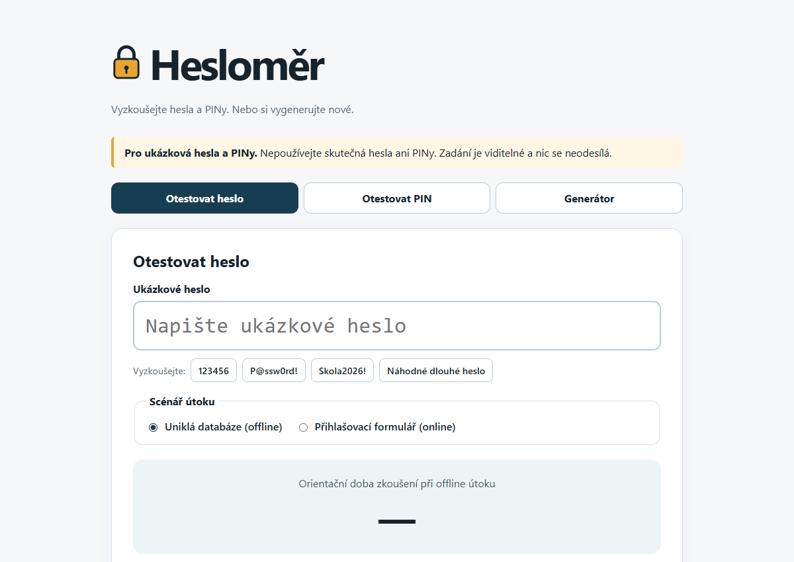
!Testujte pouze ukázková hesla a PINy. Nikdy nezadávejte své skutečné přihlašovací údaje. Příklady z prezentace nepoužívejte pro skutečné účty.
Známé vzory a předvídatelné náhrady znaků mohou být slabé. Online útok mohou brzdit omezení pokusů; offline útok na uniklou databázi závisí i na způsobu uložení hesel a výkonu útočníka. Stejně dlouhé PINy mají stejný prostor kombinací, ale vzory bývají hádány dříve. Výsledky jsou orientační model, nikoli záruka doby prolomení. Jedinečnost hesel, správce hesel a MFA zůstávají důležité.
Zdroj: Václav Maněna – představení Hesloměru, 21. 10. 2026. Bez internetu porovnejte uvedené příklady ve dvojici a rozbalte společné vysvětlení.
5 minut ze stávajících 15 minut praxe v hodině 3; poté pokračujte návrhem zabezpečení účtu.
Správce hesel pomáhá s unikátností a vyplňováním, ale potřebuje aktualizace, bezpečné odemčení a plán obnovy.
Heslo změňte při úniku či podezření a dodržte politiku organizace. Samotné pravidelné změny nenahradí unikátnost.
U správce chraňte hlavní účet silným unikátním heslem a MFA. Obnovovací kódy uchovávejte odděleně a bezpečně; ne pouze v účtu, který mají obnovit.
HTTPS a jeho meze, phishing a jeho znaky, sociální sítě, mobilní aplikace a to, kolik o nás prozradí běžné stopy.
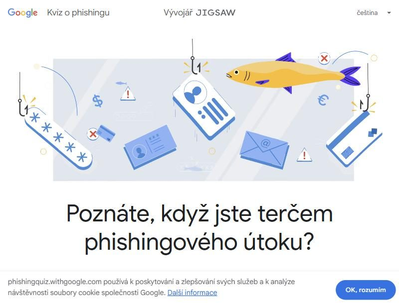
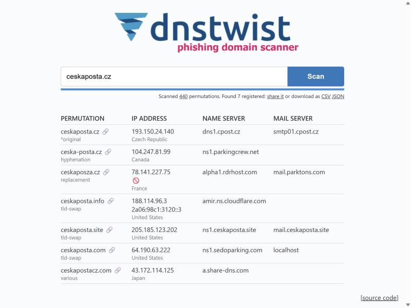
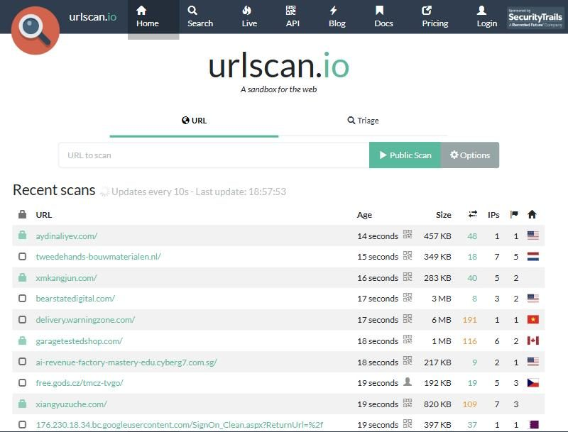
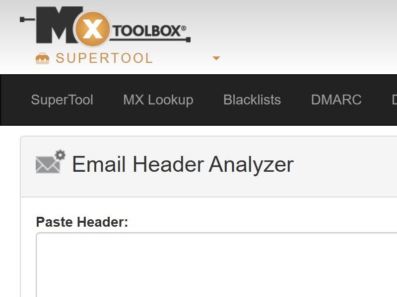
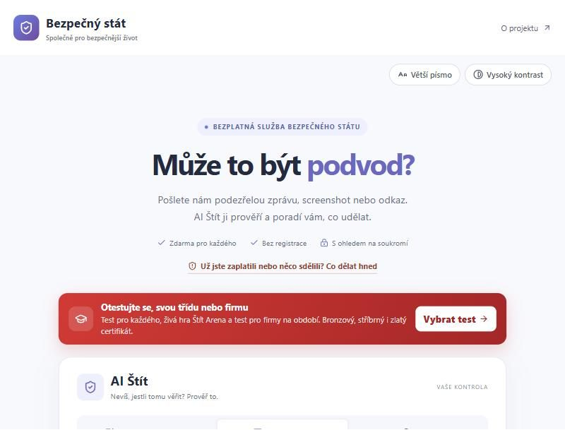
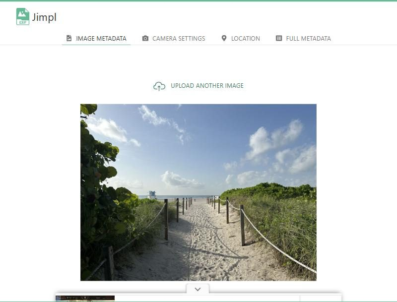
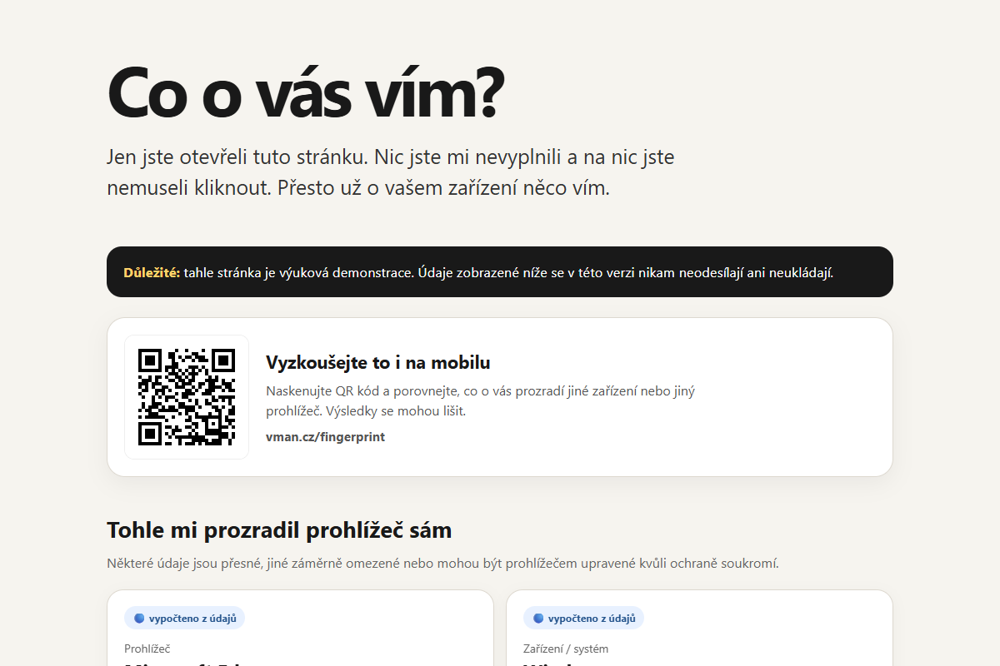
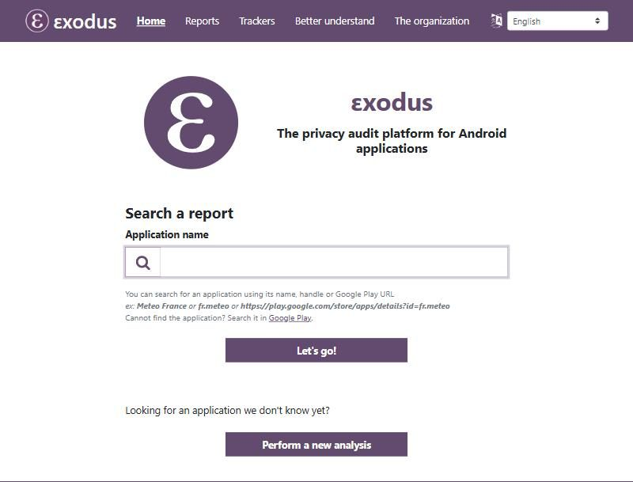
Fingerprinting: kombinování vlastností prohlížeče a zařízení pro rozlišování návštěv. Jediný údaj obvykle nestačí a samotný otisk není důkaz totožnosti člověka.
Web může získat jazyk, časové pásmo či rozměry i bez cookies. Jejich kombinace může návštěvy pomáhat rozlišovat. Údaje mohou být omezené nebo nepřesné. Odhad oblasti z IP není přesná poloha; geolokace má samostatné oprávnění. Odmítnutí cookies ani anonymní režim automaticky neodstraní všechny stopy.
Zdroj a aktuální chování: Co o vás vím? – Maněna.info · náhled z 21. 10. 2026. Cover Your Tracks (EFF) zůstává volitelným rozšířením.
3 minuty v rámci ukázek ve čtvrté hodině; bez prodloužení kurzu.
Od:
Předmět:
Obnovte přístup na
Spusťte přílohu a nadiktujte technikovi kód z SMS.
Neklikejte podle loga ani jména. Otevřete službu vlastní záložkou a požadavek ověřte jiným kanálem. Adresy .example jsou vyhrazené pro příklady.
https://ucet.banka.example/platbyhttps: způsob spojení; ucet: subdoména; banka.example: doména v tomto modelu; /platby: cesta.
V reálném světě existují i vícedílné veřejné přípony. Neřiďte se jen pravidlem „poslední dvě slova“.
Certifikát váže klíč k identitě/doméně. HTTPS neříká, že je obchod poctivý. Pharming přesměruje provoz manipulací překladu adres.
U e-shopu ověřte adresu, provozovatele, kontakty a nezávislé informace. Jazyk, měna, vzhled a certifikát jsou jen dílčí vodítka.
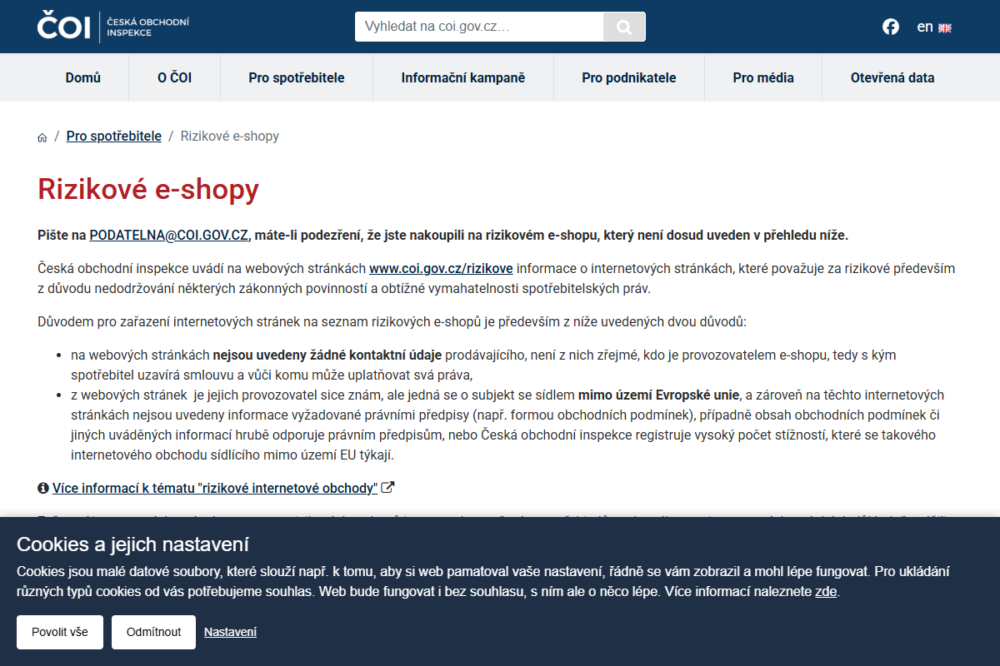
Ne. Ani HTTPS, velká sleva, ani nenalezený záznam nepotvrzují poctivost obchodu. Porovnejte přesnou doménu, ověřitelnost prodejce a další nezávislé informace; při pochybnostech nákup odložte.
Bez internetu: modelový obchod neuvede jméno prodejce ani adresu, nabízí jen kontaktní formulář. Vysvětlete, proč je těžké zjistit, s kým uzavíráte smlouvu a vůči komu řešit problém.
Zdroj: ČOI – Rizikové e-shopy · náhled z 21. 10. 2026, aktuální záznamy ověřujte na webu ČOI.
3 minuty v rámci stávající praxe ve čtvrté hodině.
Historie: seznam navštívených stránek. Cache: dočasně uložené části stránek.
Cookies: drobná data webu, například identifikátor relace či volby; mohou sloužit také sledování.
Automatické vyplňování: nabídka uložených údajů ve formulářích. Uložená hesla tvoří další samostatnou kategorii.
Anonymní režim omezuje ukládání místní historie; nezajišťuje anonymitu vůči webu či správci sítě.
Na vlastním profilu nemažte údaje naslepo. Filtr obsahu či rodičovská kontrola omezuje vybrané weby; není zárukou bezpečnosti.
Šifrování zprávy: omezuje, kdo si přečte její obsah. Digitální podpis: umožňuje ověřovat původ a změny zprávy podle použitého certifikátu a důvěry v něj.
Digitální certifikát: elektronické potvrzení vazby veřejného klíče na subjekt. Samotný podepsaný e-mail neznamená, že každý jeho požadavek je bezpečný.
Příklad: zašifrovaný e-mail chrání rozpočet před čtením; podpis pomáhá odhalit změnu částky.
VoIP: přenos hlasu přes internet. End-to-end šifrování: obsah je určen koncovým účastníkům, ne automaticky všem prostředníkům.
Ověřte protistranu a členy skupiny. Nesdílejte hesla ani přihlašovací kódy; neotvírejte nečekané soubory.
Sdílejte jen potřebné okno, zkontrolujte notifikace a po práci sdílení ukončete. Šifrování neochrání kompromitovaný telefon ani snímek obrazovky příjemce.
Na vlastním telefonu dobrovolně najděte přehled oprávnění. Prověřte polohu, mikrofon, kontakty a fotografie. Nastavení nemusíte měnit.
U modelového profilu rozhodněte, kdo smí vidět příspěvky a polohu. Kyberšikana je ubližování pomocí digitálních prostředků; grooming je manipulativní navazování důvěry za účelem zneužití.
Uchovejte důkazy, využijte blokování a hlášení, vyhledejte pomoc podle situace. Dezinformaci nešiřte před ověřením.
Při ztrátě použijte oficiální službu lokalizace a zamknutí, kontaktujte IT a operátora. Vzdálené smazání je nevratný krok a závisí na připojení a nastavení zařízení.
Zálohování podle pravidla 3-2-1, rozdíl mezi smazáním a trvalým odstraněním, deepfake a podvody se syntetickým hlasem.
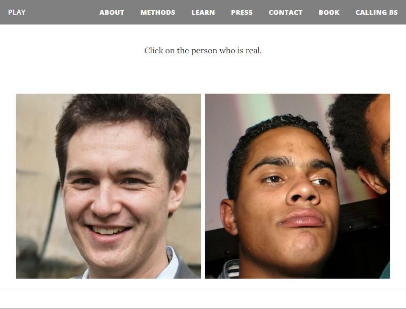
3-2-1: tři kopie včetně originálu, dvě různé technologie/média, jedna kopie mimo místo práce. Offline či neměnná kopie zvyšuje odolnost.
NAS: síťové úložiště. USB, externí disk, NAS i cloud mohou být cílem zálohy; samotné další úložiště ještě není plán.
Stanovte co, jak často, kam, na jak dlouho, kdo a jak ověří obnovu. Komprese zmenší data; není to šifrování.
Synchronizace: změnu či smazání může přenést i do dalších zařízení.
Záloha: uchovává obnovitelnou kopii či starší stav podle nastavených pravidel.
Verzování: historie změn; ověřte délku uchování a možnosti obnovy. Cloud může mít zálohovací funkce, ale je nutné je skutečně nastavit a vyzkoušet.
Dvě složky na jednom disku slouží pouze pro nácvik; nechrání proti poruše disku.
Obnovený soubor je čitelný, má původní obsah a kód. Původní záložní kopie stále existuje.
Kontrolní kód: ZALOHA-321. Obnova má proběhnout ze samostatné kopie, nikoli pouze z koše. Pro skutečný plán přidejte jiné médium, kopii mimo místo práce a pravidelný test.
Ve dvojici navrhněte zálohování rodinných fotografií: jaké kopie, četnost a kdo bude obnovu kontrolovat?
Koš umožňuje obnovu. Ani jeho vyprázdnění samo nezaručí odstranění všech dat z média.
HDD, SSD, telefon a cloud vyžadují odlišné postupy. U SSD nelze spoléhat na běžné přepsání jednotlivého souboru.
Cloudové kopie, zálohy a sdílení mohou přetrvat smazání. Před prodejem zařízení využijte postup výrobce nebo IT, ověřte zálohu i výsledek sanitizace.
Zamkněte obrazovku, nenechávejte zařízení bez dozoru, omezte fyzický přístup a podle prostředí využijte kabelový zámek či zabezpečenou místnost.
Šifrování pomáhá při odcizení uzamčeného zařízení; záloha pomáhá při jeho ztrátě. Jde o dvě různé potřeby.
Miniúkol: proč nestačí před prodejem notebooku smazat složku Dokumenty?
Mohou zůstat obnovitelná data, jiné účty, cache, uložené přístupy i další kopie. Je nutné řešit celé zařízení a postup odpovídající jeho úložišti.
Jeden čte scénář, druhý reaguje. Navrhněte ověřovací postup, který nezávisí na tom, zda hlas zní přirozeně.
Pozastavit platbu, hovor ukončit, zavolat na dříve známý kontakt a dodržet schvalování plateb. Doplňkově použít předem domluvené ověření; veřejně zjistitelná osobní fakta nestačí.
Neobvyklý rytmus hlasu, textura, geometrie a rty mohou vzbudit podezření; jejich absence pravost nedokazuje. Ani AI detektor není konečný důkaz.
Otevřete skutečnou službu známou cestou. Z důvěryhodného zařízení změňte heslo, ukončete jiné relace a prověřte MFA a obnovovací údaje. Změňte i stejné heslo použité jinde.
U pracovního účtu ihned kontaktujte IT. Při vyzrazení platebních údajů kontaktujte banku jejím oficiálním kanálem.
Přestaňte na zařízení pracovat, odpojte jej od sítě a kontaktujte IT jiným zařízením. Řiďte se pokyny; nemažte důkazy ani bez rozmyslu nepřipojujte záložní disk.
Poznamenejte čas, soubor a provedené kroky. Samotné zavření okna nevrací situaci do bezpečného stavu.
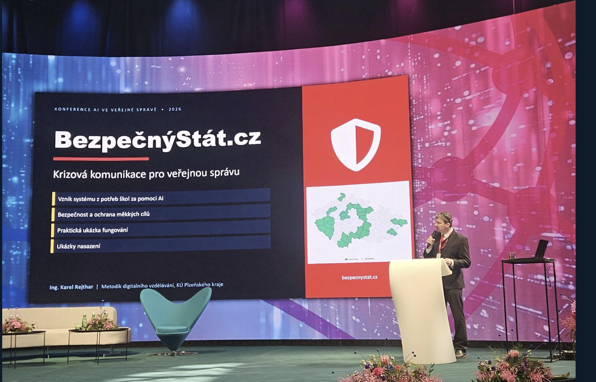
Představení projektu BezpečnýStát.cz a krizové komunikace pro veřejnou správu.
Na bezpečnost v každodenním digitálním životě navazuje AI Štít — pomoc s podezřelými zprávami, screenshoty a odkazy.
Vyzkoušet AI Štít ↗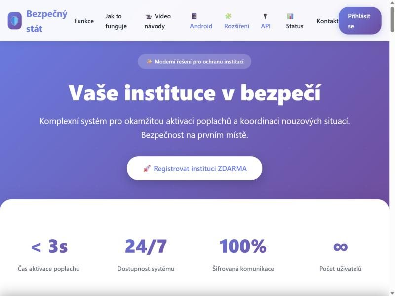
Výklad je vlastní zpracování podle ECDL / ICDL M12, sylabus 2.1, česká lokalizace 1.2 z 6. 3. 2025. Kódy na slajdech označují související oblasti. Pět hodin je úvodní průchod s nácvikem, nikoli záruka zvládnutí všech zkouškových úloh.
Náhledy externích služeb jsou ilustrativní, mohou se lišit od aktuálního webu. Služby mohou vyžadovat účet, změnit podmínky nebo být nedostupné. Offline varianty hlavních cvičení jsou součástí prezentace.
ECDL / ICDL Sylabus 2.1 · Modul 12 · 5 vyučovacích hodin
Stáhnout původní cvičný balíček M12.zip (1,9 MB) ↓
Archiv obsahuje zadání a podklady. Rozbalte jej do vlastní cvičné složky a zachovejte adresářovou strukturu; pracujte s kopií.
M12a a M12b: otázky 1–10 jsou teorie, úkoly 11–20 praxe. U každé následující otázky nejprve odpovězte, potom rozbalte vysvětlení.
Jde o starší cvičný test podle sylabu 2.0. Výklad řešení je vlastní, nikoli oficiální klíč ECDL. AI témata ze sylabu 2.1 procvičujeme v hlavní části školení.
Tato příloha je určena pro následné procvičení nebo samostatný rozbor nad rámec 225 minut.
Pracujte na kopii původní sady se zachovanými složkami Trenink M12a/M12b, Objednávky, Archivace a Různé. Přejmenované duplicitní přílohy samy neurčují jejich původní umístění.
Výsledky Wi-Fi, firewallu a certifikátu ověřte na svém počítači. Neskenujeme zde soubory ani neměníme zabezpečení zařízení. Předložené postupy nejsou dokladem splnění úloh.
Odpověď b) VPN – chráněný tunel do vzdálené sítě.
Odpověď c) Frant@35#FB je zamýšlená nejlepší možnost z nabízených odpovědí. Pro skutečný účet však použijte delší jedinečné náhodné heslo nebo náhodnou frázi; tento zveřejněný příklad nepoužívejte.
Odpověď d) Ověření identity uživatele pomocí tělesných či behaviorálních znaků.
Odpověď a) Kybernetická šikana je zamýšlená odpověď. Neaktualizovaný prohlížeč také představuje technické riziko, ale otázka míří na přímé ubližování dítěti.
Odpověď b) Sdílení internetového připojení telefonu s dalším zařízením.
Odpověď c) Rozsáhlá (rozlehlá) počítačová síť.
Odpověď b) Trvalé odstranění dat na vhodném magnetickém médiu specializovaným zařízením. Nejde o postup pro SSD a nelze jej nahrazovat domácím magnetem.
Odpověď c) V nabídce jde o získání údajů falešnými e-maily. Phishing může využívat i jiné kanály a usilovat o platbu či spuštění škodlivého souboru.
Odpověď d) Z nabízených možností d: drobná data, která prohlížeč ukládá pro web. Cookies může nastavit také skript stránky; nejsou samy o sobě malware.
Odpověď b) Instant messaging – komunikace v reálném čase. Jde o historické příklady; znalost těchto konkrétních služeb není podstatou pojmu.
Odpověď c) Šifrování dat, spolu s bezpečnou správou klíčů a přístupů.
Odpověď a) Podvržené e-maily mohou vylákat osobní či přihlašovací údaje.
Odpověď c) Malware. Může být spuštěn i uživatelem, který byl uveden v omyl.
Odpověď d) Vypnout sdílení souborů; firewall ponechat zapnutý. To samo nezaručí bezpečnost celé komunikace.
Odpověď c) Zamýšlená odpověď je kontrola certifikátu. Ověřujte také přesnou doménu a provozovatele: platný certifikát sám neprokazuje poctivost webu. Bez oficiálního klíče nelze potvrdit způsob bodování této starší formulace.
Odpověď b) Raději ne – zvažte účel zveřejnění a okruh příjemců.
Odpověď b) Skenování oka. Pouhý záznam hlasu není automaticky ověřením identity; hlasová biometrie je samostatná metoda.
Odpověď a) Zálohy uložené na různých místech a ověřená obnova.
Odpověď a) Odezírání obrazovky či zadávaných údajů přes rameno.
Odpověď d) Specializovaný postup/nástroj odpovídající médiu. Pro SSD nelze spoléhat na obyčejné přepsání jednotlivých souborů; vyřazení řešte s IT.
Lektor doplní požadovaný začátek názvu. V nabídce dostupných Wi-Fi spočítejte aktuálně zobrazené názvy odpovídající zadání, bez připojování k cizím sítím. Do Odpovědi.rtf zapište skutečný počet. Bez určeného prefixu nemá úloha jednoznačný výsledek.
Otevřete Zabezpečení Windows → Firewall a ochrana sítě a zjistěte stav pro aktivní síťový profil. Zapište Ano/Ne podle skutečnosti. Nastavení kvůli zjištění neměňte.
Otevřete https://www.ecdl.cz. Přes informace o připojení zobrazte certifikát a pole Vystavitel (Issuer). Zapište skutečně zobrazený název; nelze jej převzít ze starého řešení, protože certifikáty se mění.
V plánovači použitého antiviru vytvořte denní kontrolu na 23:00 a ověřte, že je zapnutá. U Defenderu může být potřeba Plánovač úloh → Microsoft → Windows → Windows Defender → Windows Defender Scheduled Scan, případně zásah správce. Kontrola nemusí běžet na vypnutém či spícím PC; ověřte podmínky úlohy a další spuštění.
Ve cvičném profilu otevřete vymazání údajů prohlížení, zvolte odpovídající časové období a ponechte zaškrtnutou pouze historii navštívených stránek. Cookies, cache, hesla, formuláře a historii stahování nechte beze změny. Ověřte výsledek v historii.
Ve cvičném profilu projděte ukládání a vyplňování hesel, adres, platebních údajů, formulářů a návrhy/dokončování v adresním řádku. Vypněte relevantní funkce podle konkrétního prohlížeče. Jde o nastavení chování, nikoli automatický požadavek smazat uložená data; lektor ověří všechny kategorie.
V Archivace vyberte pouze Stížnosti 2010.zip, zkopírujte jej do Objednávky a ověřte název a velikost. Nepoužívejte přesun: záložní kopie musí zůstat. Nezaměňte jej s jiným ZIPem podobného názvu.
V 7-Zipu otevřete obnovený Stížnosti 2010.zip a extrahujte obsah do Objednávky. Heslo z této cvičné úlohy: LuckaXXL>110-110-110. Ověřte cílovou cestu a přítomnost rozbalených souborů, archiv ponechte.
V Objednávky zobrazte sloupec Datum změny a vyberte pouze soubory s časem od 1. 1. 2011 včetně do 1. 1. 2012 výlučně. Zkopírujte je do Archivace a porovnejte výběr i počet. Rozhoduje datum změny, nikoli rok v názvu. U jednotlivě nahraných příloh může být čas změny přepsán; bez původních dat nelze správný seznam určit.
Na pracovní kopii otevřete dokument v desktopovém Wordu: Soubor → Informace → Zamknout dokument → Zašifrovat pomocí hesla. Použijte cvičné heslo J23-&-kopyto, potvrďte a uložte. Zavřete a znovu otevřete: bez hesla nesmí být obsah čitelný. Omezení úprav nestačí.
Lektor určí konkrétní SSID. Ve vlastnostech dostupné sítě zjistěte typ zabezpečení a zapište skutečný údaj, například WPA2-Personal, WPA3-Personal či otevřená síť. Nepřipojujte se k cizí síti jen kvůli úloze.
Průzkumník → Hory.jpg → Vlastnosti → Obecné → Upřesnit: ukažte volbu Šifrovat obsah a zabezpečit tak data. Šifrování neprovádějte. Pořiďte snímek (Win+Shift+S) a vložte do Odpovědi.rtf. EFS nemusí být dostupné v edici Home ani na nepodporovaném souborovém systému; takové prostředí je nutné předem upravit pro cvičení.
Na https://www.ecdl.cz otevřete certifikát a odečtěte Platnost od / Not Before. Do Odpovědi.rtf zapište aktuální datum, případně čas a časové pásmo. Nejde o konec platnosti ani datum návštěvy.
V antiviru zvolte vlastní kontrolu a označte pouze podsložku Různé ve variantě M12b. Spusťte kontrolu a ověřte cíl, dokončení a výsledek. Počet nálezů se může lišit podle nástroje a aktualizací. Tento metodický klíč žádný výsledek skenu nepotvrzuje.
Ve cvičném profilu otevřete vymazání údajů a vyberte pouze soubory/obrázky uložené v mezipaměti (cache). Historii, cookies, uložená hesla a formuláře ponechte. Zkontrolujte výběr před potvrzením.
Na cvičném PC otevřete Nastavení → Systém → Vzdálená plocha a vypněte přijímání připojení. Ověřte vypnutý stav; na Windows Home není hostitel RDP standardně dostupný. Neměňte nastavení počítače, ke kterému jste právě připojeni vzdáleně, ani spravovaného pracovního zařízení bez IT.
Z Archivace zkopírujte pouze Masna Tlouštík a synové.xlsx do Objednávky. Zálohu ponechte na původním místě, ověřte shodný název a obsah/velikost. Nepoužívejte náhodně přejmenovanou duplicitní přílohu místo původní struktury.
V Objednávky označte pouze všechny prezentace PowerPointu, včetně .pptx a .pptm (a .ppt, pokud je v sadě). V 7-Zipu Přidat do archivu → ZIP → název Prezentace.zip → heslo Heslo#2. Archiv vytvořte v Objednávky a ověřte seznam souborů. Vyzkoušejte extrakci se správným i chybným heslem; makra se nespouštějí. Test nespecifikuje metodu šifrování: pro reálnou ochranu volte podporované AES, nikoli slabé ZipCrypto.
Zkopírujte pouze Prezentace.zip z Objednávky do Archivace. Ověřte existenci na obou místech a shodnou velikost, případně kontrolní součet. Nekopírujte celou složku ani archiv nepřesouvejte.
Otevřete pracovní kopii v desktopovém Wordu heslem 5@-PIC-bum. Vyplňte dotazník libovolnými fiktivními odpověďmi, uložte a zavřete. Znovu otevřete a zkontrolujte, že odpovědi zůstaly uložené. Heslo neodstraňujte, zadání to nepožaduje.
Řada praktických úloh nezanechává dostatečný doklad. Lektor proto ověřuje postup přímo na obrazovce; samotná shoda teoretických odpovědí nepotvrzuje splnění testu.
Původní PDF uvádí u M12b v úvodu otázky 1–4, ale obsahuje teorii 1–10. Pro tento rozbor vyplňte všech deset.
Metodik digitálního vzdělávání
Krajský úřad Plzeňského kraje
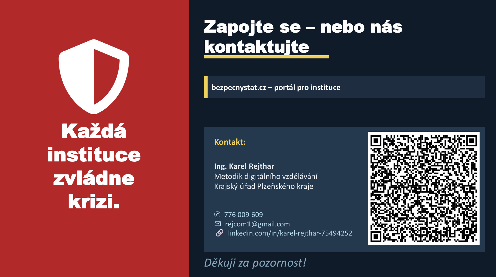
Společně pro bezpečnější život.